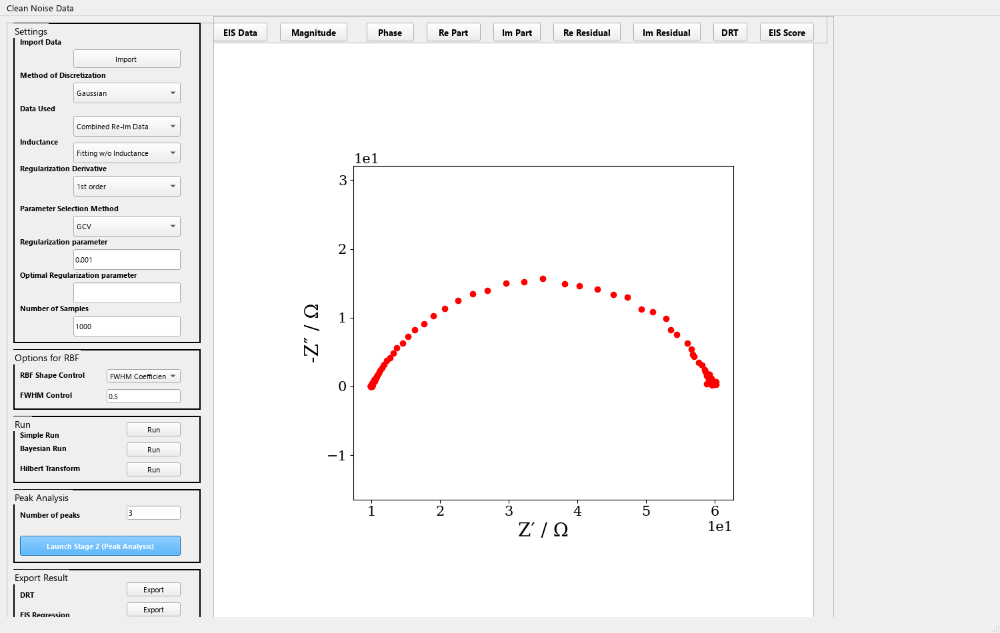
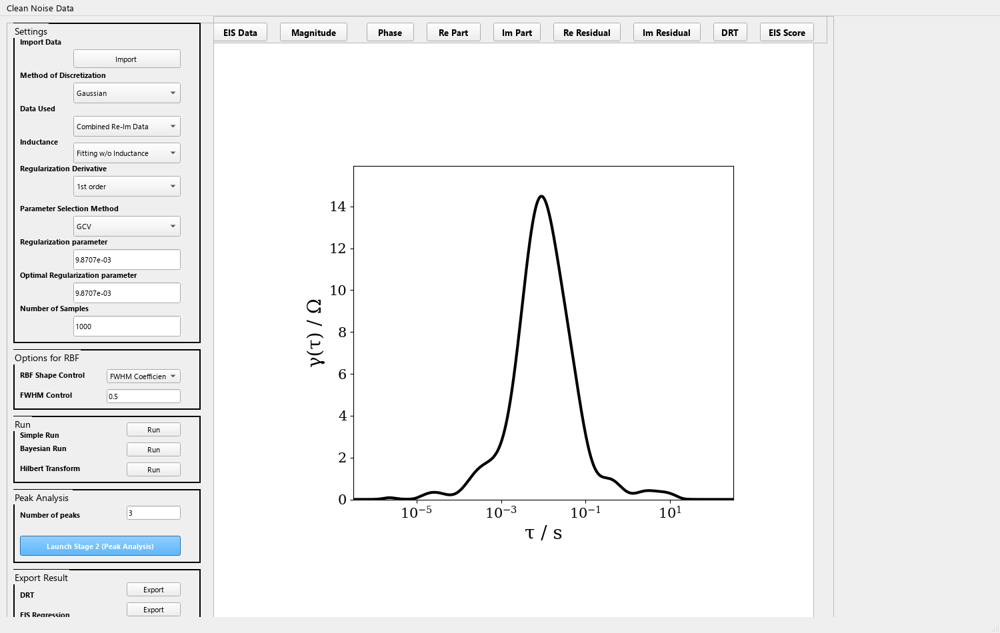
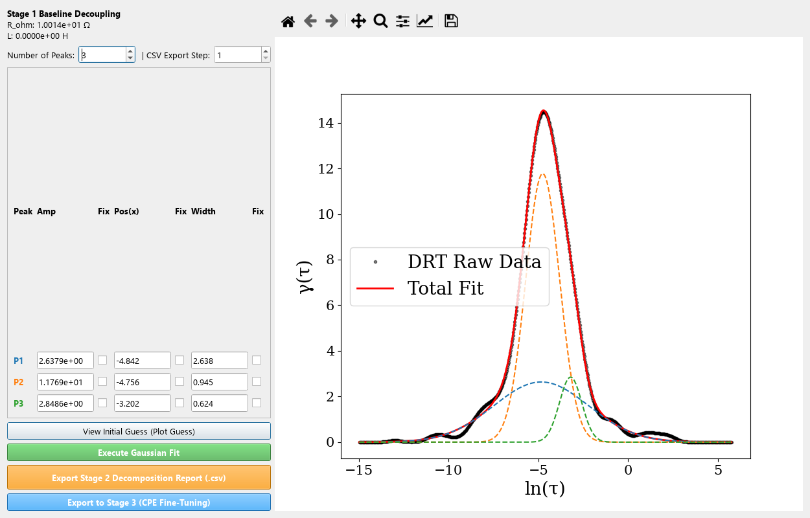
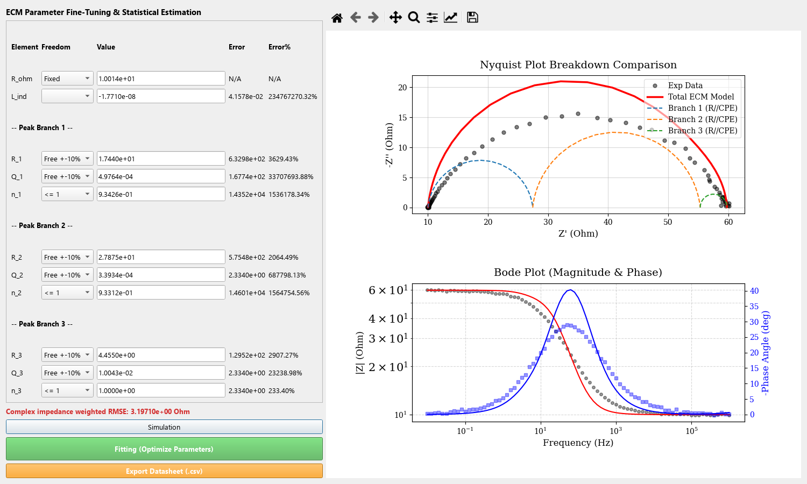

DRTxECM 的介面是英文。以下按鈕與欄位名稱都直接引用程式中的原文， 方便你對照畫面操作。整體流程是固定的七個步驟。
在主視窗左側的 Import Data 區塊按 Import，選擇 CSV 或 TXT 檔後， 會開啟「EIS Data Import Preprocessing Panel (DRTxECM)」視窗。
不同儀器（BioLogic、Autolab、Solartron、Gamry…）匯出的表頭列數與欄位順序都不一樣， 這個視窗就是用來處理這些差異：
| 控制項 | 作用 |
|---|---|
| 跳過列數設定 | 指定檔案開頭要略過幾列（儀器表頭、註解、空白列） |
| Toggle Column 3 (Z'') Sign (* -1) | 把第三欄（虛部）乘上 −1。有些儀器把 Z'' 存成正的，Nyquist 圖會上下顛倒，用這個按鈕修正 |
| Confirm and Import | 確認並匯入 |
匯入後資料會出現在主視窗，畫面上方會顯示 EIS 圖形。程式的資料解析邏輯放在
DataImportPreprocessor，若你的檔案格式比較特殊，
原始碼在 pyDRTtools/extensions.py。
選單列上有一個獨立的動作 Clean Noise Data（快速鍵 Ctrl+D）。 點下去會開啟「EIS Interactive Data Cleaning Interface」。
在 Nyquist 圖上直接點擊要剔除的資料點即可移除，不必回去編輯原始檔。
| 按鈕 | 作用 |
|---|---|
| ↩ Undo Last Deletion | 復原上一次刪除 |
| Reset All Changes | 還原全部刪除 |
| Apply Cleaning and Return | 套用並回到主視窗 |
視窗上會即時顯示 Current active data points: 目前剩餘點數，方便你確認刪了多少。
清理完成後，程式會用 PCHIP 單調內插把資料重新取樣到均勻的對數頻率格點。 DRT 的數值方法要求頻率格點均勻，所以這一步不是單純的資料刪除， 而是同時做了重採樣。若你的資料本身已經很均勻乾淨，也可以跳過這一步。

主視窗左側是 DRT 的設定區，右側上方是圖、下方是執行按鈕。設定欄位如下：
| 欄位 | 選項 | 說明 |
|---|---|---|
| Method of Discretization | Gaussian（預設）、C2 Matern、C4 Matern、C6 Matern、Inverse Quadratic、Inverse Quadric、Cauchy、PWL | 離散化 γ(τ) 用的基底函數（徑向基底）。Gaussian 是最常用的起點；PWL 為分段線性 |
| Data Used | Combined Re-Im Data（預設）、Re Data、Im Data | 擬合時使用實部、虛部，或兩者一起。預設兩者合用 |
| Inductance | Fitting w/o Inductance（預設）、Fitting with Inductance、Discard Inductive Data | 高頻端的電感行為要一起擬合、忽略，或直接把電感區段的資料丟棄 |
| Regularization Derivative | 1st order（預設）、2nd order | 正則化項的微分階數，控制 γ(τ) 的平滑程度 |
| Parameter Selection Method | custom、GCV（程式啟動時預設）、mGCV、rGCV、LC、kf、re-im | 正則化參數 λ 的決定方式。選 custom 時由下方的欄位手動指定 |
| Regularization parameter | 預設 0.001 |
λ 的手動值（僅在 custom 模式使用） |
| Optimal Regularization parameter | 唯讀 | 程式自動選擇出的 λ，執行後會顯示在這裡 |
| Number of Samples | 預設 1000 |
貝氏相關方法（Bayesian / BHT）的取樣數 |
| RBF Shape Control | FWHM Coefficient（預設）、Shape Factor | 決定基底函數寬度的方式 |
| FWHM Control | 預設 0.5 |
基底函數的寬度係數。調大＝更平滑，調小＝解析度更高但更容易出現振盪 |
設定好之後，右下方有三種 DRT 演算法可以執行，各自有一個 Run 按鈕：
| 按鈕 | 方法 |
|---|---|
| Simple Run | 脊回歸／Tikhonov 正則化。最快，一般情況先用這個 |
| Bayesian Run | 貝氏正則化，同時估計雜訊與正則化的超參數 |
| Hilbert Transform | BHT（Bayesian Hilbert Transform），利用 Kramers-Kronig 關係的變體 |
主視窗右側有一排顯示按鈕，用來切換要看哪張圖：
| 按鈕 | 圖形內容 |
|---|---|
| EIS Data | 原始 EIS 資料的 Nyquist 圖 |
| Magnitude | Bode 圖的阻抗大小 |Z| |
| Phase | Bode 圖的相位角 |
| Re Part | 實部對頻率 |
| Im Part | 虛部對頻率 |
| Re Residual | 實部殘差（實驗值 − 擬合值） |
| Im Residual | 虛部殘差 |
| DRT | γ(τ) 分布，也就是下一步要分解的目標 |
| EIS Score | 各方法的配適評分，用來比較不同設定的好壞 |
判斷品質的訣竅：殘差應該在零附近隨機散布，不該有系統性的彎曲。 若殘差有明顯結構，通常代表峰的數量不足、正則化參數 λ 不合適， 或高頻電感沒有處理好。

在 Peak deconvolution 區塊填入 Number of peaks（預設 3），
再按藍色的 Launch Stage 2 (Peak Analysis)，開啟
「Stage 2: DRT Peak Fitting (DRTxECM)」視窗。
這個視窗會對上一步得到的 γ(τ) 做多高斯峰擬合， 把連續的分布拆成數個離散的峰：
| 按鈕 | 作用 |
|---|---|
| View Initial Guess (Plot Guess) | 先看程式自動產生的初始猜測，不進行優化 |
| Execute Gaussian Fit | 執行多高斯擬合 |
| Export Stage 2 Decomposition Report (.csv) | 匯出分解報告：每個峰的參數，以及各峰的擬合曲線取樣點 |
| Export to Stage 3 (CPE Fine-Tuning) | 把峰參數換算成 R//CPE 初始值並開啟第三階段 |
每個峰有三個欄位，各自帶一個勾選框：
| 欄位 | 意義 |
|---|---|
amp | 峰的振幅 Ai |
cen | 峰中心位置 μi（單位是 ln τ） |
wid | 峰寬 σi（預設 0.8） |
勾選框＝鎖定該參數（固定不動，不外給任何變化空間）； 不勾選＝讓擬合自由調整。若你確定某個峰的物理位置， 把它鎖住可以讓其他峰收斂得更穩定。

amp、位置 cen、寬度 wid，
右側黑色點是 DRT 原始資料、紅線是三峰總和、彩色虛線是個別峰。
左上角同時顯示第一階段解出的 R_ohm（本範例為 10.014 Ω）。
按 Export to Stage 3 (CPE Fine-Tuning) 後會開啟 「Stage 3: ECM Fine-Tune Panel (DRTxECM)」。
程式自動做以下的換算（每個高斯峰對應一個 R//CPE 分支）：
也就是說，DRT 的峰不只是視覺上的分解，而是直接提供物理上合理的起點。 這是 DRTxECM 相對一般萬用電路擬合工具最大的優勢之一。
左側表格的欄位是 Element ｜ Freedom ｜ Value ｜ Error ｜ Error%：
| Element | 對應的電路元件 |
|---|---|
R_ohm | 串聯的歐姆電阻 R0（高頻截距） |
L_ind | 串聯電感 L |
R_i | 第 i 個分支的電阻 |
Q_i | 第 i 個分支的 CPE 參數 Q |
n_i | 第 i 個分支的 CPE 相角 α（0.2 到 1.0 或 1.05） |
Freedom 欄決定每個參數在優化過程中的自由度。 不同元件能選的模式不一樣（以下是介面上的原文）：
| 元件 | 可選模式 | 允許範圍 |
|---|---|---|
R_i、Q_i |
Free、Free +-5%、Free +-10%、Fixed |
Free：0 到 ∞；Free +-5% / Free +-10%：目前值的 ±5% / ±10%；Fixed：鎖住 |
n_i（即 α） |
Free、<= 1、Fixed |
<= 1：0.2 到 1.0；Free：0.2 到 1.05；Fixed：鎖住 |
L_ind |
Free、Fixed |
Free：−∞ 到 ∞；Fixed：鎖住 |
R、Q、L 的預設都是 Fixed，α 的預設是 <= 1，
所以剛進到第三階段時，只有三個 α 是可以被優化的。
建議的順序是：先讓 α 收斂，再逐一放開 R 與 Q。
正式文獻上 CPE 的 α 理論上限是 1（理想電容）。程式另外提供容許到 1.05 的模式，
是為了吸收量測誤差與等效串聯電阻的偏差，讓擬合不會被硬邊界卡住。
若你要報表上的 α 嚴格符合物理定義，請用 <= 1。
視窗下方會顯示 Complex Impedance RMSE，
Fitting 之後更新為帶單位的 RMSE 值。

Free +-10%、α 設為 <= 1 執行 Fitting 的結果。
注意 Error% 欄：這個範例用三個分支去擬合單一 ZARC 半圓，屬於過度參數化，
所以標準誤很大。實務上峰數應該配合 DRT 曲線上的實際峰數，不要為了降低 RMSE 而增加分支。
| 位置 | 按鈕 | 匯出內容 |
|---|---|---|
| 主視窗 Export 區 | DRT → Export | DRT 的 γ(τ) 結果（頻率、τ、γ） |
| 主視窗 Export 區 | EIS Regression → Export | EIS 的擬合值與殘差 |
| 主視窗 Export 區 | Figure → Save | 目前顯示的圖檔 |
| Stage 2 | Export Stage 2 Decomposition Report (.csv) | 峰參數與各峰的分解曲線 |
| Stage 3 | Export Datasheet (.csv) | 電路參數、標準誤、以及擬合後的合成報表 |
會出現 No EIS data loaded! 的警告。請先按 Import 匯入資料。
通常是正則化不足（λ 太小）或 FWHM Control 太小。可以： 把 Parameter Selection Method 維持在 GCV 讓程式自動選 λ； 把 FWHM Control 調大；或改用 Bayesian Run。
常見原因是初始值離真實值太遠。建議的順序是：
先用 Stage 2 得到好的初始猜測 → 進 Stage 3 後逐一放開參數，
不要一次把所有參數設成 free。實務上先放開 R 與 Q，
收斂後再放開 α，會穩定得多。
代表最佳解落在邊界上。若停在 1.0，可能是該分支其實接近理想電容， 或資料品質不足以支撐 α 的自由擬合； 若停在 0.2，通常是該分支的頻率範圍太窄或點數太少。 可以檢查該分支在 Nyquist 圖上的覆蓋範圍。
N/A 或 <15%
不確定度是由反 Hessian 矩陣估計的。若 Hessian 無法取得或不穩定，
程式會退回顯示 N/A；在部分情況下則以 <15%
表示粗略的相對誤差上限。這不是錯誤，但代表那組參數的標準誤需要保守看待。
多高斯擬合最多迭代 10000 次。峰的數量越多越慢。 建議從 2 到 4 個峰開始，確認 γ(τ) 的形狀之後再增加。